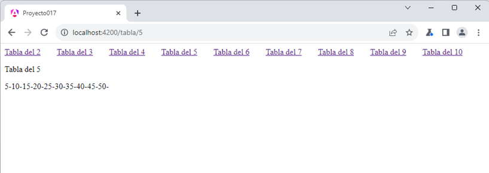

Angular se base en el concepto de SPA (Single Page Applications - Aplicaciones de una sola página), lo cual no significa que la URL del navegador sea siempre la misma.
El objetivo de Angular es que cuando cambiamos de URL no se recupere la estructura de la página del servidor, sino que se recree en forma local (salvo que se tengan que hacer peticiones de datos dinámicos al servidor)
Vimos que las rutas están dadas por las URL:
http://localhost:4200/ http://localhost:4200/presentacion http://localhost:4200/articulos http://localhost:4200/contacto http://localhost:4200/acercade
Tenemos la ruta raiz '/', otra ruta es 'acercade' etc.
Ahora veremos como trabajar en Angular si una ruta tiene uno o más parámetros. Un ejemplo de ruta con parámetros podría ser pasar el número de artículo en la ruta:
http://localhost:4200/articulos/323
Estamos pasando a la ruta 'articulos' el parámetro '323'. Como vimos anteriormente es obligatorio definir exactamente las rutas que puede procesar la aplicación Angular.
Con un ejemplo analizaremos como declaramos las rutas, pasamos parámetros y como los recuperamos.
Definir en la componente principal de la aplicación 10 hipervínculos con los números del 1 al 10, que llamen a otra ruta de la aplicación que tenga por objetivo mostrar la tabla de multiplicar de dicho valor.
Crear una segunda componente que reciba el parámetro y proceda a mostrar la tabla de multiplicar.
Los enlaces de los números del 1 al 10 siempre deben quedar visibles, lo que debe actualizarse es la componente que calcula la tabla de multiplicar:
Crearemos primero el proyecto :
ng new proyecto017
Procedemos a crear la componente 'TablanroComponent':
ng generate component tablanro
Modificamos el archivo 'tablanro.component.ts':
import { Component } from '@angular/core';
import { ActivatedRoute, ParamMap } from '@angular/router';
@Component({
selector: 'app-tablanro',
imports: [],
templateUrl: './tablanro.component.html',
styleUrl: './tablanro.component.css'
})
export class TablanroComponent {
nro=0;
tabla='';
constructor(private activatedRoute: ActivatedRoute) {
this.activatedRoute.paramMap.subscribe((parametros: ParamMap) => {
this.nro = parseInt(parametros.get("nro")!);
this.tabla = '';
for (let x = 1; x <= 10; x++) {
let t = x * this.nro;
this.tabla += t + '-';
}
})
}
}
Importamos la clase ActivedRoute y la interface ParamMap:
import { ActivatedRoute, ParamMap } from '@angular/router';
Al constructor inyectamos un objeto de tipo ActivedRoute:
constructor(private activatedRoute: ActivatedRoute) {
Definimos dos atributos 'nro' y 'tabla' que luego mediante interpolación mostraremos en la vista de la componente:
nro=0; tabla='';
El método constructor se ejecutará una única vez cuando se crea la componente, luego como el usuario puede presionar sucesivas veces los enlaces con la misma ruta pero con distintos valores en su parámetro, debemos tener alguna forma para que dichos valores se refresquen en la vista. La clase 'ActivatedRoute' dispone de un método llamado 'paramMap' que llamando a suscribe logramos que cada vez que cambia el valor del parámetro de la ruta se ejecute la función anónima que le pasamos como parámetro.
La función anónima recibe como parámetro un objeto de la clase ParamMap que contiene entre otros un método llamado 'get' que nos permite recuperar el parámetro 'nro' de nuestro problema:
this.activatedRoute.paramMap.subscribe((parametros: ParamMap) => {
this.nro = parseInt(parametros.get("nro")!);
this.tabla = '';
for (let x = 1; x <= 10; x++) {
let t = x * this.nro;
this.tabla += t + '-';
}
})
Modificamos el archivo 'tablanro.component.html':
<p>Tabla del {{nro}}</p>
<p>{{tabla}}</p>
En la vista mostramos el atributo 'nro' y el string con la tabla de multiplicar que lo recuperamos del atributo 'tabla'. Recordar que estos dos atributos se modifican en la función anónima que le pasamos al método 'suscribe' del objeto paramMap que almacena el objeto de la clase 'ActivadedRouter' que se le inyectó en el constructor.
Codificamos la componente principal 'app.component.html':
@for(numero of [2,3,4,5,6,7,8,9,10];track $index) {
<span style="margin-right: 2rem;">
<a routerLink="tabla/{{numero}}">Tabla del {{numero}}</a>
</span>
}
<div>
<router-outlet />
</div>
El template de la componente principal siempre está visible, mediante el @for generamos los enlaces:
@for(numero of [2,3,4,5,6,7,8,9,10];track $index) {
<span style="margin-right: 2rem;">
<a routerLink="tabla/{{numero}}">Tabla del {{numero}}</a>
</span>
}
Es importante notar que mediante la propiedad 'routerLink' indicamos la ruta que debemos cargar y el parámetro a pasar:
routerLink="tabla/{{numero}}"
Luego es fundamental la etiqueta 'router-outlet', que es el lugar donde se sustituye con el contenido de la ruta seleccionada de un enlace de la página:
<router-outlet />
De esta forma logramos que siempre se muestren los enlaces y lo que cambia es la ruta que cargamos y se hace en el lugar que especificamos la etiqueta 'router-outlet'.
En la componente principal debemos importar la clase RouterLink:
import { Component } from '@angular/core';
import { RouterOutlet, RouterLink } from '@angular/router';
@Component({
selector: 'app-root',
imports: [RouterOutlet, RouterLink],
templateUrl: './app.component.html',
styleUrl: './app.component.css'
})
export class AppComponent {
}
También debemos modificar el archivo 'app.routes.ts':
import { Routes } from '@angular/router';
import { TablanroComponent } from './tablanro/tablanro.component';
export const routes: Routes = [{
path: "tabla/:nro",
component: TablanroComponent
}];
Importamos la clase 'TablanroComponent' :
import { TablanroComponent } from './tablanro/tablanro.component';
Agregamos un objeto al arreglo 'routes' iniciando dos atributos: 'path' que indica el nombre de la ruta y en este caso el parámetro 'nro', y en 'component' indicamos el nombre de la componente que se debe mostrar:
export const routes: Routes = [{
path: "tabla/:nro",
component: TablanroComponent
}];
Podemos probar esta aplicación en la web aquí.
Una ruta puede tener más de un parámetro, por ejemplo si necesitamos pasar un segundo parámetro en el ejercicio anterior que indique la cantidad de términos de la tabla de multiplicar que se va a mostrar, deberíamos hacer los siguientes cambios:
En el archivo 'app.routes.ts' cambiar el atributo path de la ruta:
export const routes: Routes = [{
path: "tabla/:nro/:terminos",
component: TablanroComponent
}];
En la componente 'tablanro.component.ts' cambiar el for con el parámetro recibido:
constructor(private activatedRoute: ActivatedRoute) {
this.activatedRoute.paramMap.subscribe((parametros: ParamMap) => {
this.nro = parseInt(parametros.get("nro")!);
this.tabla = '';
for (let x = 1; x <= parseInt(parametros.get("terminos")!); x++) {
let t = x * this.nro;
this.tabla += t + '-';
}
})
}
Finalmente los enlaces en el archivo 'app.component.html' requieren dos parámetros, por ejemplo si queremos mostrar 20 términos de la tabla de multiplicar, el código debe ser:
<a routerLink="tabla/{{numero}}/20">Tabla del {{numero}}</a>